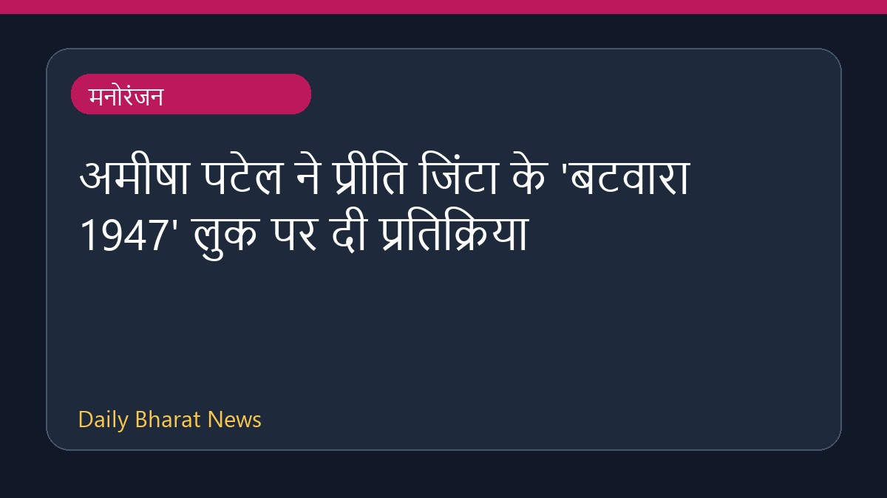

अमीषा पटेल ने प्रीति जिंटा के 'बटवारा 1947' लुक पर दी प्रतिक्रिया

हाल ही में आई मनोरंजन जगत की खबरों के अनुसार, अभिनेत्री अमीषा पटेल ने उन प्रशंसकों की प्रतिक्रिया पर अपनी बात रखी है, जिन्होंने आने वाली फिल्म 'बटवारा 1947' में प्रीति जिंटा के किरदार और लुक की तुलना अमीषा की पुरानी भूमिका से की है। इस विषय को लेकर सोशल मीडिया और अन्य मंचों पर चर्चाएं हो रही हैं। हालांकि, इस संबंध में उपलब्ध जानकारी काफी सीमित है और विस्तृत विवरण का इंतजार किया जा रहा है।